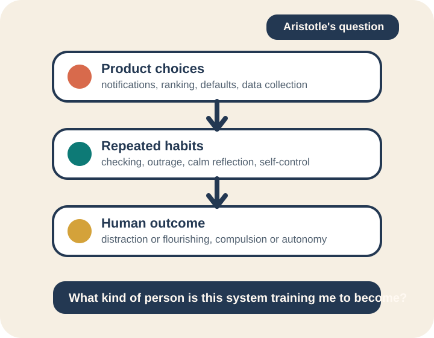

Scale & Speed
Web systems now shape beliefs, relationships, and civic life. One ranking decision affects millions. Innovation moves faster than ethical reflection.
Web Programming Course
Aristotle University of Thessaloniki
A 15-minute talk about ethical programming, ethical AI, the attention economy, and how developers can resist systems that scatter thought.
About the speaker
Anastasios Vanis
Opening question
If code can influence what millions of people think and feel, what responsibilities do we have as developers?
Google Cloud Support
Warply
Pfizer
Why this matters
Web systems now shape beliefs, relationships, and civic life. One ranking decision affects millions. Innovation moves faster than ethical reflection.
Platforms optimize for engagement through infinite scroll, streaks, and variable rewards. What keeps users engaged is not always what helps them think clearly.
Prediction systems learn from behavior, then optimization systems shape what users do next. Without consent, design patterns influence habit and public discourse.
Constant interruption loops increase mental switching costs. Shallow engagement replaces deep focus. Developers lose reasoning quality, creativity, and memory depth.

A philosophical lens
Aristotle helps us ask one practical question: what kind of habits are our systems training in people?
If a platform trains constant checking, outrage, or dependency, that is already an ethical outcome.
Notifications, feeds, and ranking systems do not just serve users. They also teach users how to behave.
Ethical programming should strengthen autonomy, reflection, and informed choice instead of compulsion.
Are we building systems that help people flourish, or systems that keep them reactive and distracted?
Design & Development
Practical approach
Use in: sprint planning, PR review, design critique, launch readiness.
def send_notification(user_id, message):
notification = {
"priority": "high",
"sound": True,
"vibration": True,
}
send_time = calculate_when_user_most_vulnerable()
schedule_notification(notification, send_time)
track_engagement_for_manipulation(user_id)Overrides user settings, targets weakness, exploits vulnerability for engagement.
def send_notification(user_id, message):
prefs = get_user_notification_preferences(user_id)
if not prefs["notifications_enabled"]:
return {"status": "skipped"}
if is_in_user_quiet_hours(user_id):
return {"status": "deferred"}
schedule_notification(message, prefs["preferred_send_time"])
log_notification_sent(user_id, reason="user_request")Respects consent, quiet hours, user timing, and transparency.
For web programming students
Build domain-specific tools that fill gaps and provide autonomy. Proprietary implementations allow:
Appendix
Closing thoughts
Every line of code is a small decision about the world we want to live in. The question is not whether your systems have values — they always do. The question is whether those values are chosen deliberately.
The future of the web depends on whether we optimize for extraction or for human flourishing.
You are entering a field with enormous leverage. Use it to build things that respect the people who depend on them. Ask the hard questions early. Document your trade-offs. And never stop treating ethics as a first-class concern — not an afterthought.
Thank you
Let's stay in touch